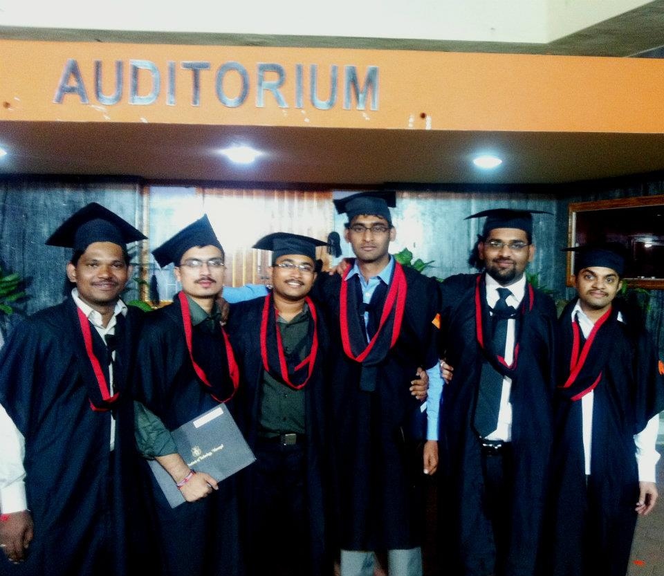

|
This contains history and mission of NIT WARANGAL
NIT Warangal, originally a Regional Engineering College (REC), was founded with the laying
of its foundation stone by Jawaharlal Nehru on October 10, 1959. It was the first such
institution in India and was later renamed NIT Warangal in September 2002, gaining Deemed
University status. After decades of continuous development, assisted by UNESCO, UK, and the
World Bank, NIT Warangal has become a premier institution for engineering and technology.
|

|